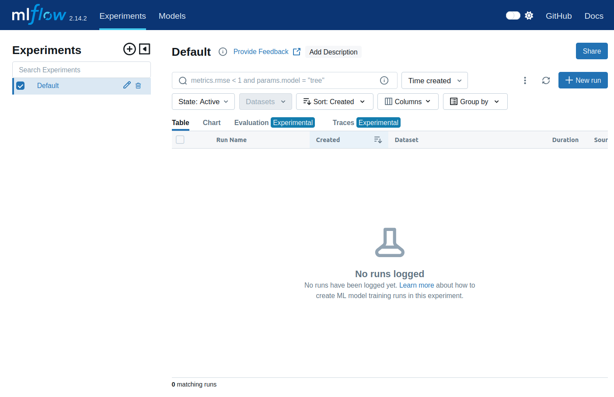
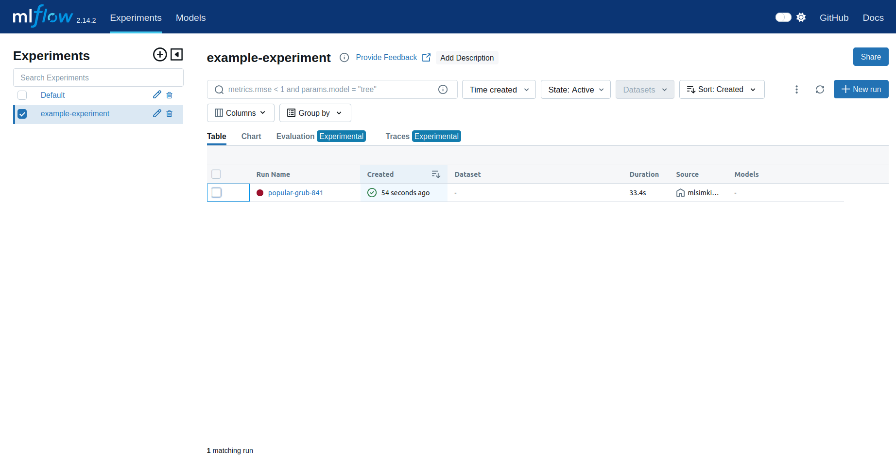
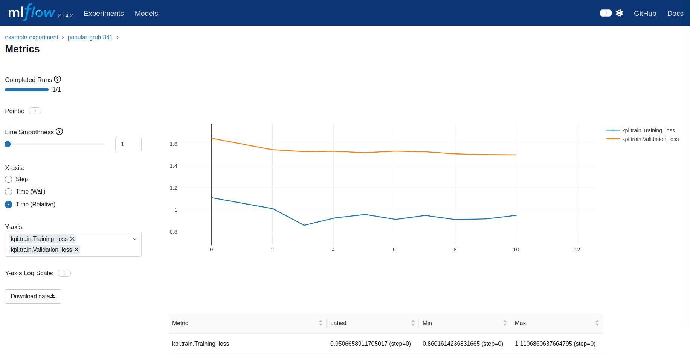

Tracking Experiments and Results with MLFLow¶
Introduction¶
MLSimKit integrates with MLFlow to streamline the development of the underlying ML models. MLFlow is a platform that allows for easy tracking of the MLSimKit results/artifact and comparision of model performance for an entire team. You can learn more about MLFlow by reviewing their online documents. In the following guide, we provide instructions on how to enable MLFlow tracking. We do not cover the setup of managed or remote MLFlow tracking servers as this can vary widely from organization to organization and is coverd in the MLFlow online documents. We do however cover setting up a sever locally to help you get started.
Topics:
Experiment Configuration¶
First we need to add tracking information to the config file or via the command-line interface (CLI). There are two parameters that need to be defined,
experiment-name which can be any string that uniquely identifies your experiment and tracking-uri which is the server address and port (e.g. http://127.0.0.1:8080).
In the following example we set the tracking-uri to the address used in Local Tracking. Note that the tracking-uri can also be a local folder path, however this would bypass the server.
Below is an example of how to define these arguments in the config file.
...
experiment-name: example-experiment # Unique name for your experiment
tracking-uri: http://127.0.0.1:8080 # Local folder or Tracking server URL
...
Local Tracking¶
If your compute environment has a GUI and web browser, we recommend using a tracking server which can be local or remote. In this section we go over how to start a local server. As part of the MLSimKit installation, you should already have MLFlow installed. To get started, open a new terminal window, activate the virtual environment you installed MLSimKit to and start the local server:
cd mlsimkit # Navigate to mlsimkit directory
source .venv/bin/activate # activate the virtual environment (if applicable)
mlflow server --host 127.0.0.1 --port 8080 # start the local tracking server
Now you can navigate in a web browser to http://127.0.0.1:8080 which should bring up the MLFlow UI.
{kind=link}
When you run MLSimKit, the MLFlow server will automatically log the results from the experiment run and they should show up in the MLFlow UI.
{kind=link}
MLFlow provides various ways to review your results. As an example we show the loss plot from a run in the following image.
{kind=link}
Here are some more resources on setting up an MLFlow tracking server:
Resuming an Experiment Run¶
MLSimKit offers flexibilty in how you may want to execute the code. As such, there are scenarios where you may want to chain MLFlow tracking
between steps. This is often encountered for workflows that use multiple GPUs and require launching train steps with the mlsimkit-accelerate command. In these workflows we need
to pass the --resume-run flag on preceeding steps to ensure all parts of the pipeline are logged under the same run in MLFlow. Here are some examples:
KPI Multi-GPU example:
mlsimkit-learn --config training.yaml --log.prefix-dir logs/preprocess kpi preprocess &&
mlsimkit-accelerate --config training.yaml --resume-run --log.prefix-dir logs/train kpi train &&
mlsimkit-learn --config training.yaml --resume-run --log.prefix-dir logs/train-prediction kpi predict
Slice Multi-GPU example:
mlsimkit-learn --config training.yaml --log.prefix-dir logs/preprocess slices preprocess &&
mlsimkit-accelerate --config training.yaml --resume-run --log.prefix-dir logs/train-image-encoder slices train-image-encoder &&
mlsimkit-learn --config training.yaml --resume-run --log.prefix-dir logs/inspect-image-encoder slices inspect-image-encoder &&
mlsimkit-learn --config training.yaml --resume-run --log.prefix-dir logs/process-mesh-data slices process-mesh-data &&
mlsimkit-accelerate --config training.yaml --resume-run --log.prefix-dir logs/train-prediction slices train-prediction &&
mlsimkit-learn --config training.yaml --resume-run --log.prefix-dir logs/predict slices predict